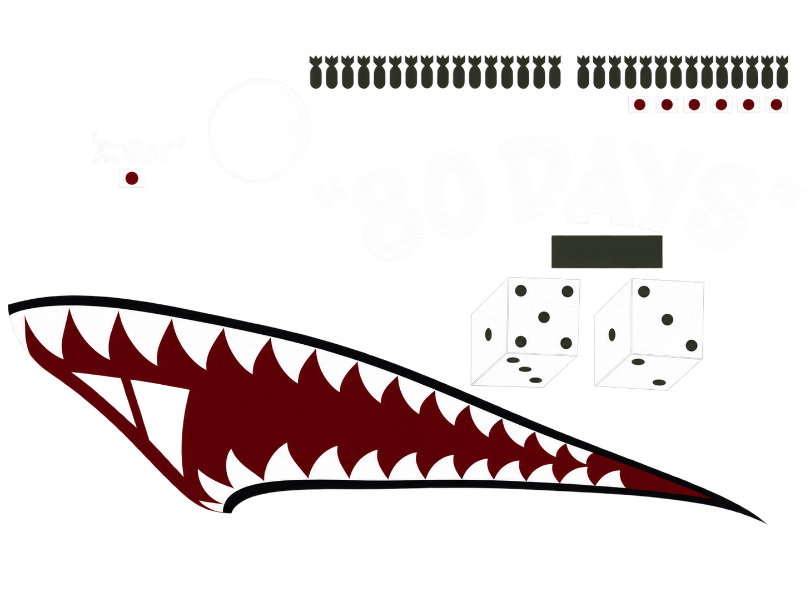

80 DAYS / R2按原图修正
名称、骰子与红黑鲨鱼嘴直接采用你提供的透明 PNG；螺旋桨默认显示。
STAM 与 HUFF 按对应照片放在窗口下方；炸弹与旗标已上移。ROBBY 暂缓。机首玻璃构型仍有差异，图案在玻璃处留空。
直接对照原图

点击图片可打开原件。原图与三维视图不作同尺度声明。
附着与证据
正在建立定位关系…
位置使用母体局部参考架；当前未获得制造毫米标定。像素测量误差与表面附着残差分别检查。
测量方法与来源
① 识别窗口、板边与尾部轮廓。
② 按部件建立局部参考架，保存比例与误差。
③ 在指定表面求附着；窗口和空缺处不跨接。
④ 用另一视角核对，并检查左右、前后与缩放。
本轮测量记录 ↗
尾号档案来源 ↗
重点检查
主翼按所给 PDF 第 8、17、18 页重新区分上下表面、长板区与活动边界，拼缝在相应边界终止。位置为近似登记，钉距和隐藏连接尚未制造校准。
查看 R14：真实孔、板厚与内外连接 ↗
磨耗与保养依据
Goodyear：轮胎构造和磨耗类型
FAA：腐蚀易发部位与预防维护
胎面是接地磨耗区；胎压、刹车及受力会改变磨耗分布。当前未把严重中心偏磨当作所有飞机的正常磨耗。未模拟强度、维修工艺或真实战损史。
视图检查
展示默认正常透视，近大远小；测量使用明确标注的固定正交视图。上视机头朝上，下视机头朝下。
细节近看
弹舱卷帘与两侧壁重新贴合；内缘搭接原有中央梁。此页显示静态关闭姿态。
侧门状态
左舷：节点 764 / 767右舷：节点 773 / 776腰部机枪：原数据保留
等待应用关闭矩阵。